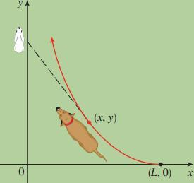

1.When a dog chases a rabbit
A dog sees a rabbit running in a straight line across an open field and gives chase.In a rectangular co-ordinate system (as given in the Figure below),we assume:

The rabbit is at the origin and the dog is at the point (L,0) at the instant the dog first sees the rabbit.
The rabbit runs up the y-axis and the dog always runs straight for the rabbit.
The dog has same speed as the rabbit.
If the dog moves along the path whose equation is y=f(x) ,then it can be shown that y satisfies the differential equation
x d.2y/dx2
with the initial conditions y=0, dy/dx=0 when x=0
y=X2-L2/4L-1/2L log(X/L)
It will be interesting to find that the dog will never be able to catch the rabbit.